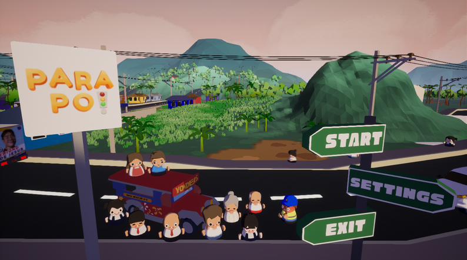
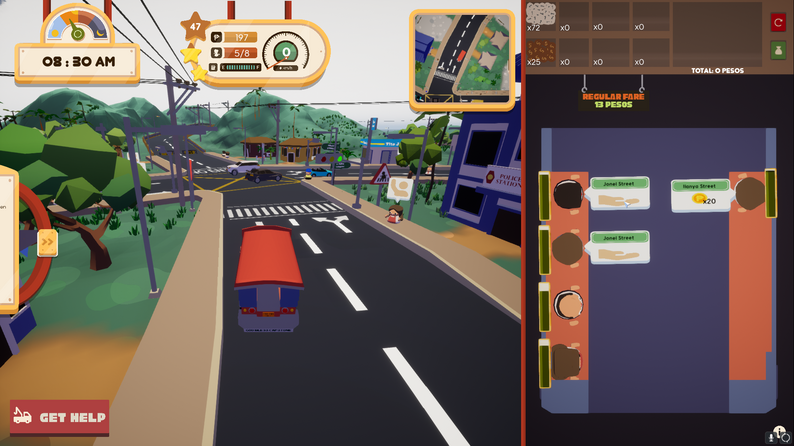
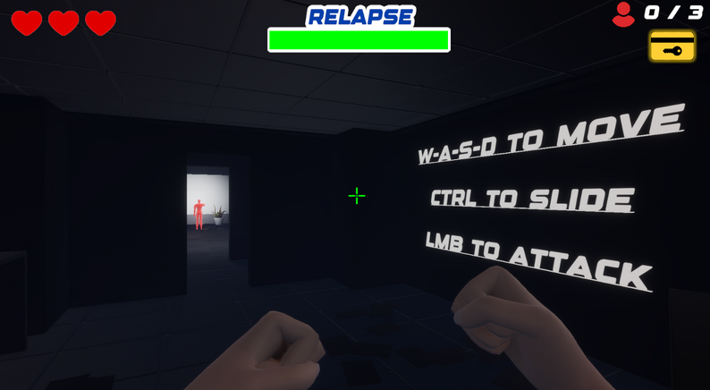

Lead programming
Credited as lead programmer across gameplay, systems, and UI programming.
Opening animation: const developer equals Marcus Florentino. The portfolio opens automatically when typing finishes.
Press Escape to fast-forward

Featured project
A released 3D simulation game about navigating the work and daily pressures of jeepney driving in the Philippines.
Credited as lead programmer across gameplay, systems, and UI programming.
Pick-ups, drop-offs, fares, resource management, and unpredictable city traffic shape each route.
Level-design work supports a colorful, recognizably Filipino setting built around the player’s route.


Two public projects, from a released driving simulation to an experimental first-person roguelite.

A 3D action prototype set inside the player’s consciousness. Marcus is credited as one of three programmers.
My public work spans gameplay, systems, and UI programming, with level-design credits on a released Unreal Engine project.